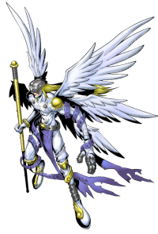

Perfil
Um Digimon Anjo com seis asas brilhantes, cujo corpo é revestido com um tecido de tão puro branco que parece divino. É um ser de perfeita virtude e, apesar de o descreverem como um Digimon que traz felicidade, ao confrontar o mal tudo que faz é atacar, com extrema calma, até que o oponente seja completamente aniquilado. Nas várias vezes em que o Digital World é visitado por uma crise, é dito que ele desce para liderar Digimons da mesma espécie.
| Angemon | |
|---|---|
|  | |
| Cracterísticas | |
| Nível | Adulto |
| Tipo | Anjo |
| Atributo | Vaccine |
| Capacidade | 20G |
| Evoluções |
de Patamon
para Holy Angemon |